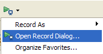
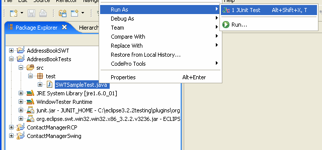

Record and Playback a Sample SWT Test
WindowTester Pro SWT records
and playback UI tests for SWT applications. The following describes how
to generate and play back a UI test for SWT applications.
Prerequisite: This
tutorial requires either RCP Developer v2.7.0 and above or WindowTester Pro
2.2.0 and above.
- Create the Sample SWT project in your workspace.
- Setup a recording configuration and record user interactions.
- Stop recording and save recorded test.
- Playback the recorded test.
- Slower playback (optional).
- Select File >
Import from the main menu.

- From the list of wizards, select WindowTester Pro
> AddressBookSWT Example Project. Please note, this wizard is only
available in WindowTester Pro v2.2.0 and above.
- Click Next.

- Click Finish. The AddressBookSWT example project is
now created in your workspace.
Look for a tool item (  ) that looks like the
run arrow with a little console under it (should be next to external
tools).
) that looks like the
run arrow with a little console under it (should be next to external
tools).
- From its pull-down menu select "Record
Configurations...".


- Select SWT Application
on the left navigation.
- Click the New (
 )
icon.
)
icon.
- Name: Enter AddressBookUI
- Project: Click Browse... and select the AddressBookSWT project
- Main class: Click Browse and select com.demo.AddressBookUI
- Click the Record button. This will run the
AddressBook SWT application in recording mode and opens the recording control shown below.


- To start recording, click on the record button (red ball) in the
recorder. Perform user interactions by entering some text in the
text fields.
Note: The buttons in the
AddressBook application is non-functional. This is just to demonstrate
how you can enter and record text entries.
To stop the recording, just close your application. A New UI Test dialog will open.

Fill in the following:
- Source folder: This is
the source folder of your test plug-in project. We recommend
that tests be placed into a project separate from the code under test.
- Create folder
automatically if they do not exist - If the Source folder does not
exist and this option is checked, it will automatically create the
test project with the src and bin folders. If your project structure does not
have a separate src and bin folders, uncheck this option and make
sure your test project exists.
- Package: The package
in your test project where you want to save the tests.
- Name: A name to call
your test class.
- Click Finish to save
your test.
SWT UI tests must be run as JUnit Tests.

- Right click on the newly recorded test class.
- Select "Run As > JUnit Test"
- The recorded test is played back. You should now see the
AddressBookSWT application with the user interactions that you
recorded.
If you change the Test runner
to JUnit 4, you also need to add the junit4 jar to your project's build
path.
You can slow down the playback by enabling the
playback delay
preference
.
Note: If you receive something like the following errors when you
playback your test, then see the corresponding FAQ entries for possible
solutions:
java.lang.SecurityException: class
"junit.extensions.TestDecorator"'s...
java.lang.NoClassDefFoundError:
com/instantiations/eclipse/debug/Tracer
java.lang.UnsatisfiedLinkError" or "java.lang.NoClassDefFoundError
org.eclipse.swt.SWTException: Device
is disposed
java.lang.reflect.InvocationTargetException
Related Topic:
Adding Assertions (Optional)
Assertions can be generated at recording time using the assertion inspector tool. The assertion inspector is activated by clicking the inspector tool item on the recording controller.
See the Assertion Inspector documentation.